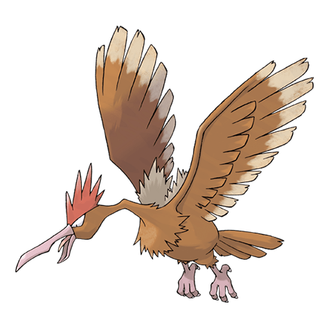
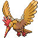

Фироу

Фироу — Покемон первого поколения под номером 22 в Покедекс. Обитает он в регионе Канто и относится к Нормальному и Летающему типу. Это финальная стадия превращения Покемона Спироу. Фироу узнаваем по длинной шее и удлинённому клюву. Эти Покемоны обладают правильной формой для ловли добычи на земле или в воде. Фироу ловко использует свой длинный и тощий клюв, чтобы ощипать добычу.
Тип и слабости:
Нормальный
Летающий
Эволюция

# 022 Фироу
Финальная стадия